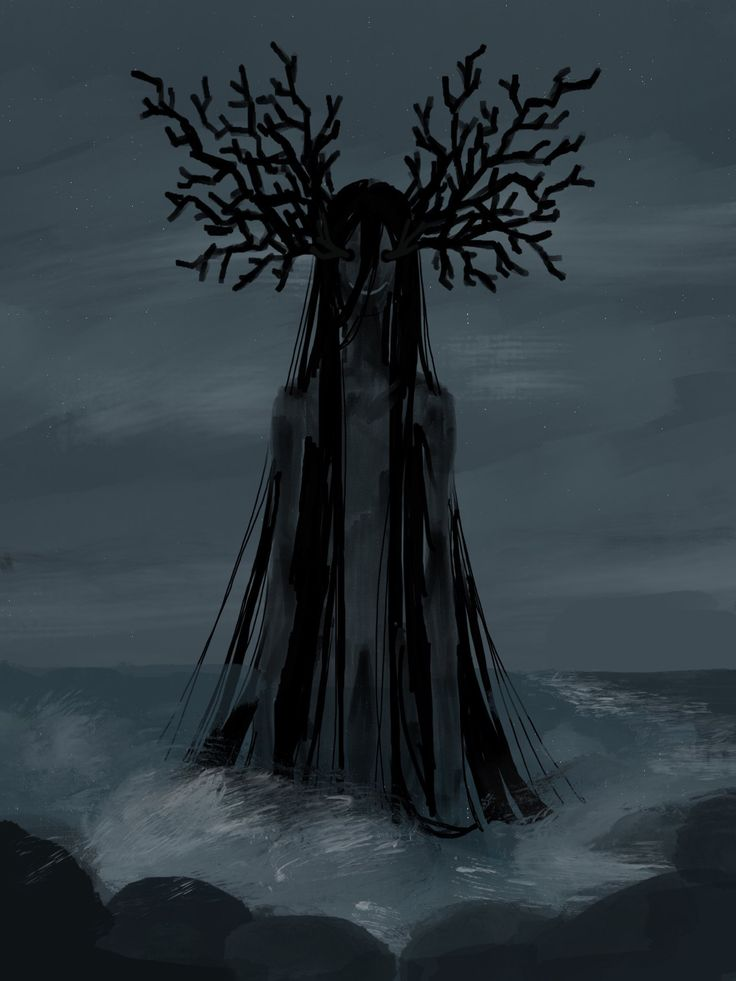

Ending: A Lost soul...
You ring the bell hearing as its toll rings out. Its a beautiful
melody that puts you in a trance. As the sound echos through your
very being you are reminded of your family and friends. Of the
warmest times in your life. Its as if your life was flashing before
your eyes. Thats because it is, stuck in your trance you dont see
the water rippling as something emerges hearing its dinner bell.

You dont realize you are being dragged into the waters depth, but as
the cold water suddenly surrounds you you're reminded of the illness
plaguing your home town. You never got what you truly needed. But
you dont get to regret your descicion as its arms wrap around you
under the water in a haunting motion that resembles comfort before
everything goes black.
You have became a lost soul, your soul becoming an accidental
sacrifice for a hungry being. It tried to comfort you in your last
moments. This is game over for this timeline but there are many
others to explore.
Start Over